Additional Procedures
- The Configure Room Management are fulfilled.
- Select Project > [Network name] > [Building] > [Floor].
- Select the room or rooms.
- Drag the room to the room information list.
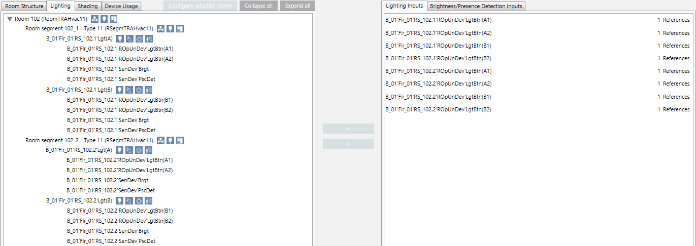
Expand default naming
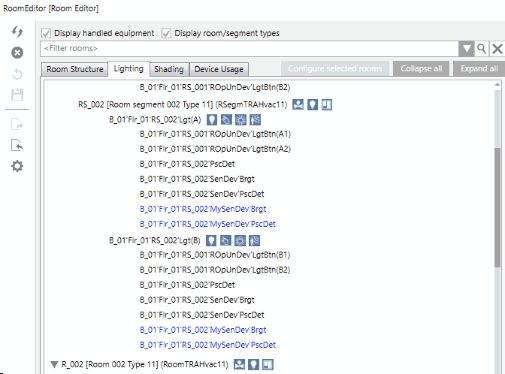
- There are device names in the room manager editor's room information list that deviate from default naming. Unknown device names are indicated in blue font.
- Click Extended settings .
- Click Add.
- Enter the device names.
- Click OK.
- Click Rescan nodes .
- The devices can be edited as usual.
Automatically assign room objects
Scenario: There are no or only partial assignments of the room objects to room.
- Highlight the room or rooms.
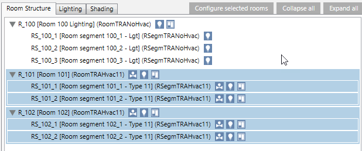
- Click Configure selected rooms.
- The dialog box Automatically configure all selected rooms displays.
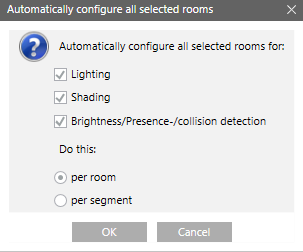
- Do the following to assign only the desired configuration:
- Select the Lighting check box.
- Select the Shading check box.
- Select check box Brightness/presence/collision detectors.
- Selection option By room or By segment.
- By room: All switches are assigned to each segment (so that each switch is able to switch on or off).
- By segment: All inputs for a segment are assigned to the same segment. - Click OK.
- The assignments are made to the room.
Apply room filter
Scenario: You moved multiple rooms to room information list for editing. You want to limit the view of rooms to improve the overview.
- Enter the filter term, for example, Room 1 in field Filter rooms. The filter applies to the description and automatically uses a wildcard after the term. For example, the term "Room 1" also displays the results for rooms 10, 11, 100.
- Click Search
 .
.
- Only rooms matching the term display.
Display lighting or shading references
Scenario: You want to view the input references in the room information list. The description refers to lighting inputs, but can be used on any type of input.
- In the assignment list, select the Lighting inputs tab.
- Double-click the appropriate lighting input.
- The references used are displayed in the room information list.
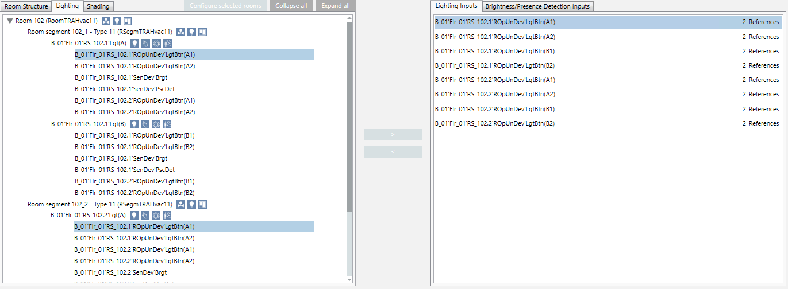
Hide rooms and segment type
Scenario: You want to hide or show the room or segment type to improve the overview.
- Select check box Show room/segment types.
- Displays additional information.
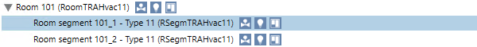
- Clear check box Show room/segment types.
- Hides the additional information.
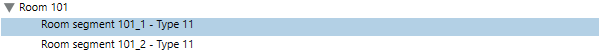
Display edited equipment
Scenario: You want to hide or show device information to improve the overview during editing.
- Select Show edited equipment.
- Displays devices within a segment.
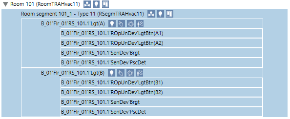
- Select Show edited equipment.
- Hides the devices.
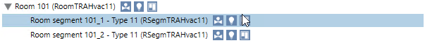
Check the changes to the assignments and display
Scenario: You want the check assignment changes.
- In the room information list, highlight the corresponding switch.
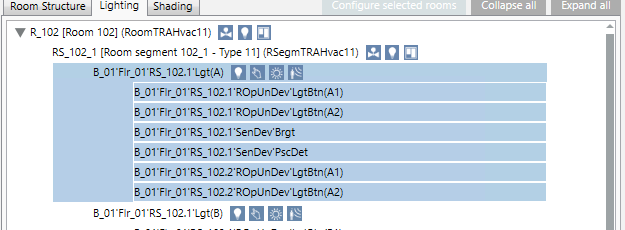
- Select the Detail log tab.
- Click Select columns .
- Select the Action details check box.
- The changes are displayed in the Detail log tab.
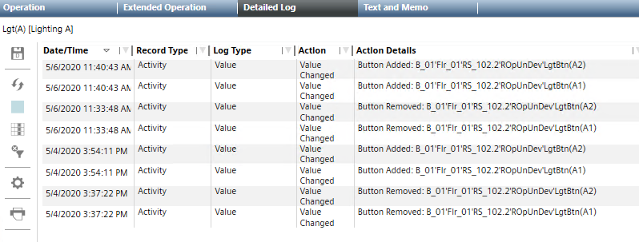
Create change report for the last 24 hours
Scenario: You must document the changes. The standard report generates a change report for the last 24 hours.
- In System Browser, select Application View.
- Select Applications > Reports > Configuration.
- Select report HQ Room Editor Changes.
- Select the Reports tab.
- The select report HQ Room Editor Changes displays.
- Enter a localized text (1, 2 and 3) for the standard report.
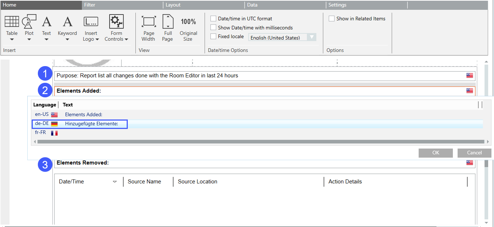
- Check the settings in the name filter Elements Added and Elements Removed:
a. Right-click format template Elements Added (Date/Time) and select Filter > Name Filter.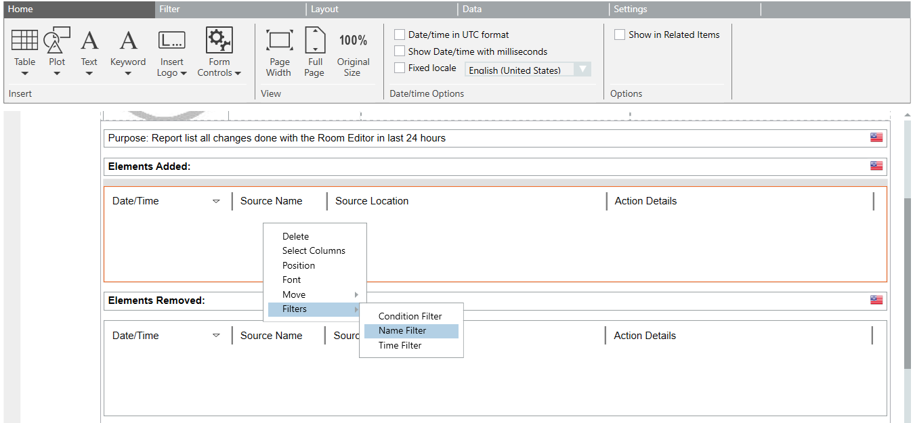
b. In the Name Filter dialog box, check the predefined path for validity and change as needed. In Valid column must showOK.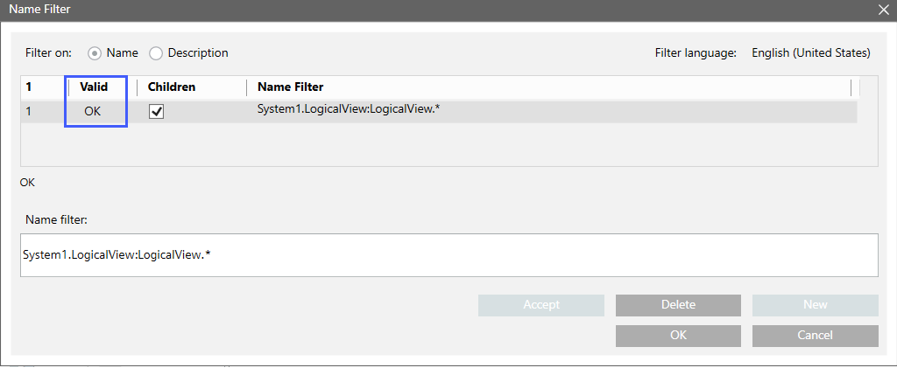
c. Also check the settings in the format template Elements Removed. - Click Save as
 . Enter a new name for the report for future use.
. Enter a new name for the report for future use. - Select Run
 .
. - The report is generated for the last 24 hours.
- Click Generate and display PDF .
- The reports can be saved or printed.
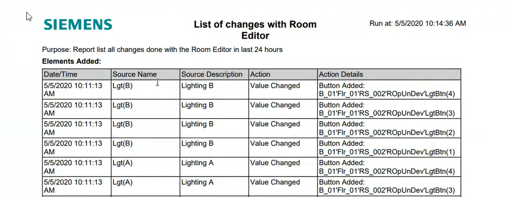

You can change the time period in the standard report, for example, to generate a report for longer periods.
Create a backup of the current configuration
Scenario: You need to change an existing configuration. You want to create a backup of the existing configuration to restore it in the event of a mistake. A backup can be made on each level of an object (building, floor, or room).
- Click Export configuration
 .
. - Enter a name for the file in the dialog box Export configuration. The select object level is proposed as the name.
- Click Save.
- A confirmation is displayed.
- Click OK.
- The XML file is saved to folder [Installation drive]:\[Installation folder]\GMSProjects\[Project name]\devices\FRM_Configurations.
Restore the last configuration
Scenario: Undo the change to the configuration.
- Click Import configuration
 .
. - Select the file in the dialog box Import configuration.
- Click Open.
- A confirmation is displayed.
- Click OK.
- The configuration from the backup is updated on the project, but not yet loaded to the automation stations.
- Click Save room configuration on device.
- The configuration from the backup is loaded to the automation stations and can be tested.